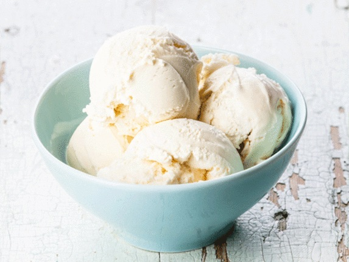

Vanilla Ice Cream Recipe

Description:
Homemade ice cream is incredibly easy to make with just a few simple ingredients you likely already have on hand. This vanilla ice cream recipe will quickly become a go-to in your repertoire.
- Prep Time: 5 minutes
- Cook Time: 5 minutes
- Additional Time: 2 hours and 20 minutes
- Totoal time: 2 hours and 30 minutes
Vanilla ice Cream Ingredients
- Milk
- Heavy Whipping Cream
- Sugar
- Vanilla Extract
How To Make Homemade Ice Cream
- Cook the milk, cream, and sugar until the sugar has dissolved.
- Transfer the mixture to a measuring cup, then add the vanilla extract. Chill overnight.
- Pour the mix into an ice cream maker and churn according to the manufacturer's directions.
- Serve immediately or ripen in the freezer before serving.
How Long Does this Ice Cream Last?
Homemade ice cream won't last as long as store-bought ice cream.
Store your vanilla ice cream in an airtight storage container, recycled ice cream container, or zip-top freezer bag.
Try to enjoy the ice cream within a few weeks for the best taste.
Full Ingredient List
- 2, 1/4 cups of milk
- 1 cup heavy whipping cream
- 3/4 cup white sugar
- 2 teaspoons of vanilla extract
Directions:
- Stir milk, cream, and sugar in a saucepan over low heat until sugar has dissolved. Heat just until the mixture is hot and a small ring of foam appears around the edge.
- Transfer cream mixture to a pourable container such as a large measuring cup. Stir in vanilla extract and chill mix thoroughly, at least 2 hours. (overnight is best.)
- Pour cold ice cream mix into an ice cream maker, turn on the machine, and churn according to manufacturer's directions, 20-25 minutes.
- When ice cream is softly frozen, serve immediately or place a piece of plastic wrap directly on the ice cream and place in the freezer to ripen, 2-3 hours.
Nutrition Facts (per serving)
- Calories: 425
- Fat: 25g
- Carbs: 46g
- Protein: 6g